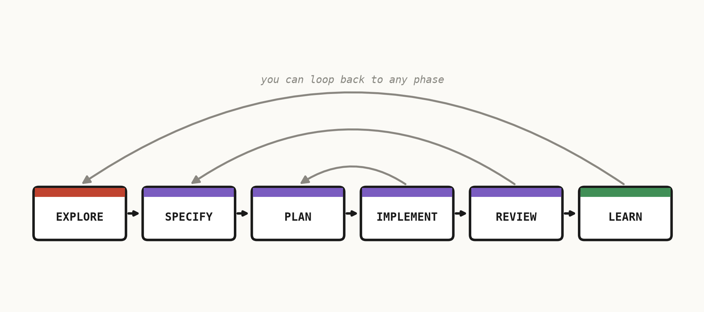

The talk · the process
The way we work
No matter the project, we move through the same phases. They help us build real understanding, build with confidence, and verify before we ship.

- Explore
Find what's possible, then pick a path worth taking. Go wide before going deep.
- Create
Turn the chosen direction into something real: specify → plan → implement → review.
- Survive
Learn so our future selves start ahead — and have fun along the way.
The real journey is messy — you can always step back a phase. That's OK.